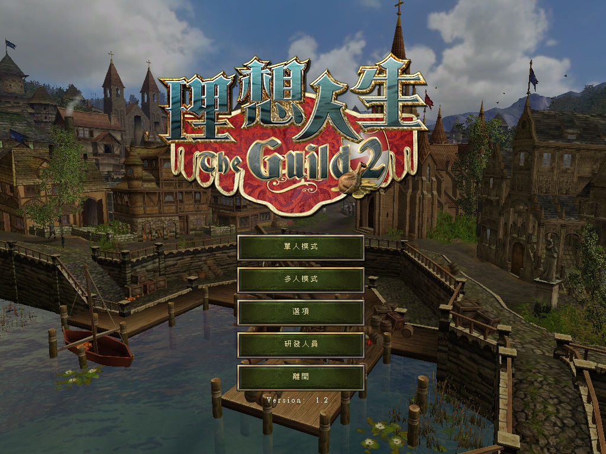
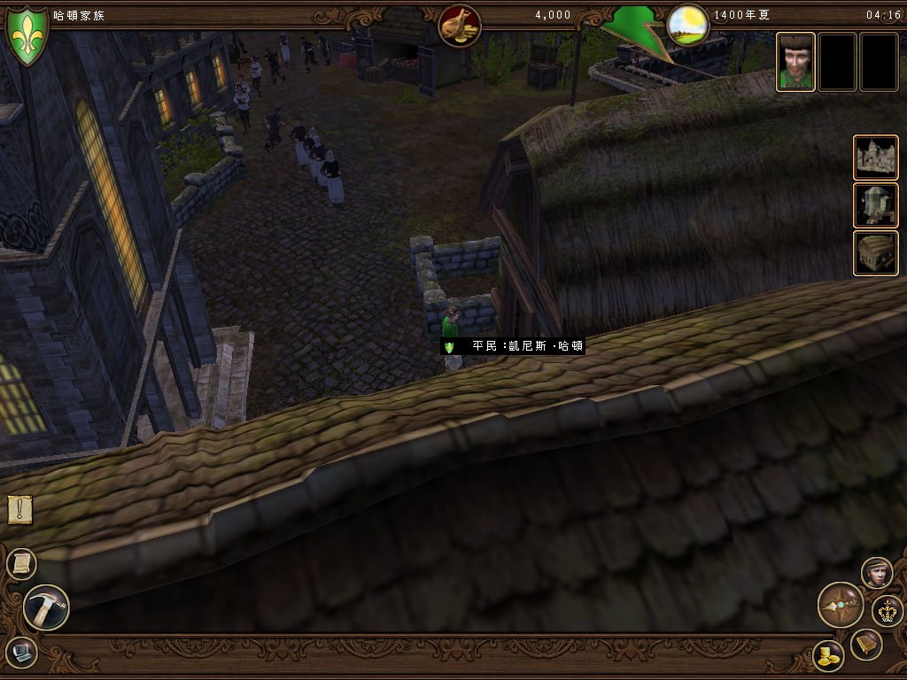

名稱：理想人生2／行會2 (The Guild 2，中文版)
簡介：4HEAD 2006年出品的生活模擬經營遊戲，兼具角色扮演與即時戰略的元素，由JoWooD
代理發行，2007年由光譜繁中化並代理發行。2007年、2008年、2010年分別推出獨立
資料片「維京霸主（Pirates of the European Seas）」、「威尼斯（Venice）」、
「文藝復興（Renaissance）」 [待補]。


保護：繁中版為光碟StarForce 4.70（序號：P3FP-NH5YY7-598933-PN2JDC-9ZB22Z）
需使用YASU屏蔽工具，或由外界掛載光碟再對應至虛擬機中。
備註：繁中版為1.2版。
檔案：nocd12e.rar = 英文1.2免光碟檔（繁中版使用後部份文字會變亂碼）